We beginnen met rotsen en tempels en een nachtelijke klim naar Adam's Peak. Daarna nemen we de beroemde trein door de theeplantages, gaan we op safari voor luipaarden en olifanten, en eindigen we met negen nachten in de surfdorpjes aan de zuidkust en een laatste avond in Galle Fort.
De route
Acht haltes, één lus
We reizen van het vliegveld naar het binnenland en via de zuidkust weer terug. Tik op een plek om er meteen heen te gaan.
chauffeur trein eigen tuktuk
- 01Sigiriya5 – 8 janZonsopkomst op Pidurangala Rock3 nachten
- 02Kandy8 – 10 janDe Tempel van de tand2 nachten
- 03Adam's Peak10 – 11 janNachtelijke klim naar de top1 nacht
- 04Ella11 – 13 janTreinreis en Nine Arch Bridge2 nachten
- 05Tissamaharama13 – 14 janSafari in Yala1 nacht
- 06Hiriketiya14 – 18 janSurfen in de baai4 nachten
- 07Ahangama18 – 23 janSurfen, yoga en walvissen5 nachten
- 08Galle Fort23 – 24 janZonsondergang op de muren1 nacht
Met een chauffeur door het binnenland, met de trein van Hatton naar Ella, en aan de zuidkust in onze eigen tuktuk.
01Culturele driehoek
Sigiriya
di 5 – vr 8 januari3 nachten
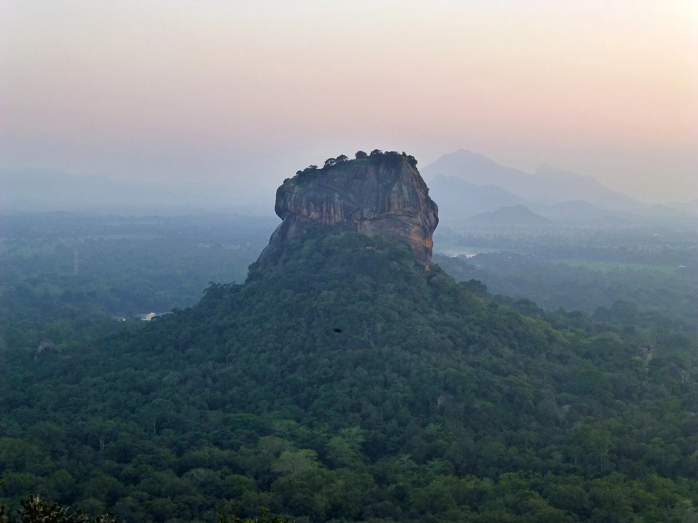
Sigiriya ligt in het hart van het oude Sri Lanka. We hebben hier een dag extra om bij te komen van de reis, tussen de rotsen, de rijstvelden en de tempels.
Zonsopkomst op Pidurangala Rock
Met de tuktuk naar het pad, 20 à 30 minuten klimmen, en dan kijken we recht op Lion Rock terwijl de zon opkomt.
Golden Temple van Dambulla
½ uur rijdenGrottempels vol boeddhabeelden en schilderingen.
Kookworkshop of Polonnaruwa
extra dagKoken bij een familie in het dorp, of een fietstocht langs de ruïnes van de oude koningsstad Polonnaruwa.
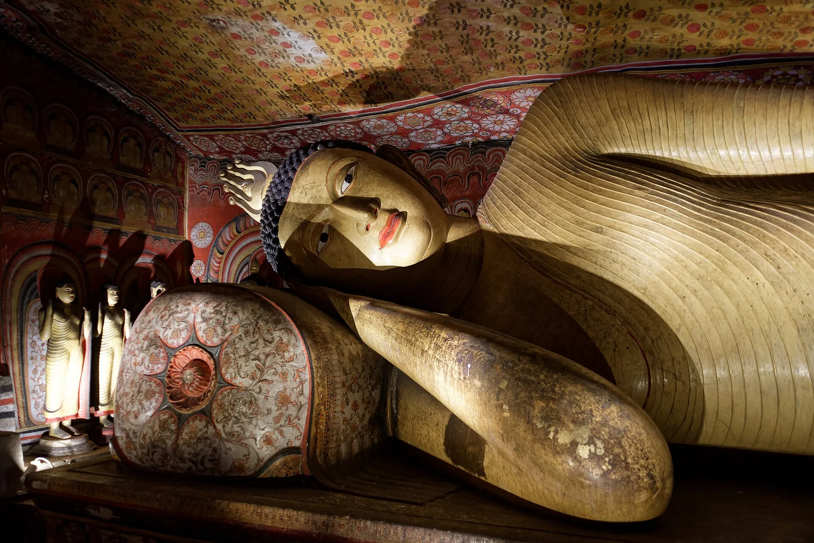
02Culturele hoofdstad
Kandy
vr 8 – zo 10 januari2 nachten
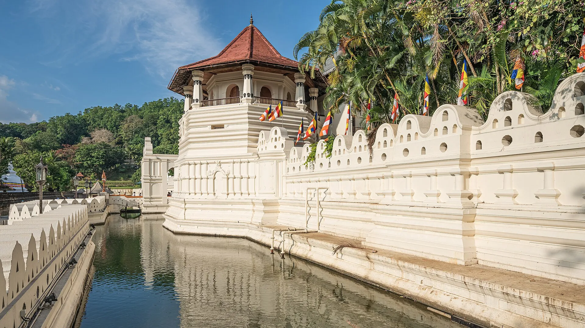
Kandy is de culturele hoofdstad van Sri Lanka, aan een meer tussen groene heuvels. Twee dagen voor tempels, tuinen en een rustig tempo.
Tempel van de tand
De heiligste tempel van het land. Om half zeven is er een ritueel, daar willen we bij zijn.
Rond Kandy Lake
zonsondergangEen wandeling om het meer en omhoog naar het grote witte boeddhabeeld boven de stad.
Botanische tuin van Peradeniya
En daarna over de centrale markt.
Een rustige dag
Opladen voor Adam's Peak.
03Heuvelland
Adam's Peak
zo 10 – ma 11 januari1 nacht
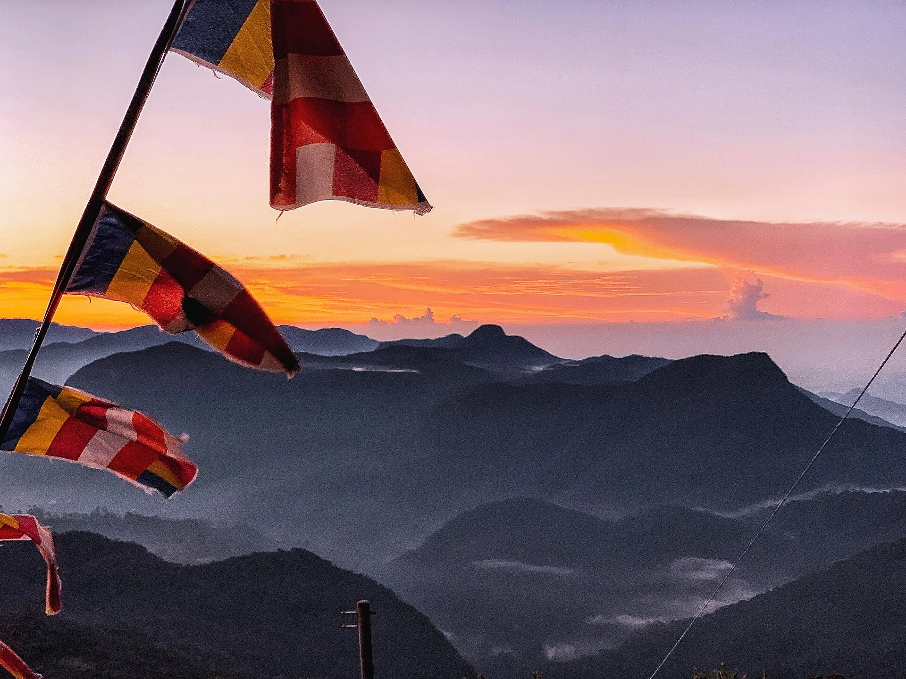
Adam's Peak is een heilige berg van 2.243 meter. In januari loopt het pelgrimspad 's nachts verlicht naar de top, en wij lopen mee.
De klim
Ongeveer 5.500 treden en 3 à 4 uur klimmen. Het is maandag, dus rustiger dan in het weekend.
Zonsopkomst op de top
Boven de wolken zien we de zon opkomen. Daarna dalen we af naar het dorp.
Naar het station van Hatton
Daar vertrekt de trein naar Ella.
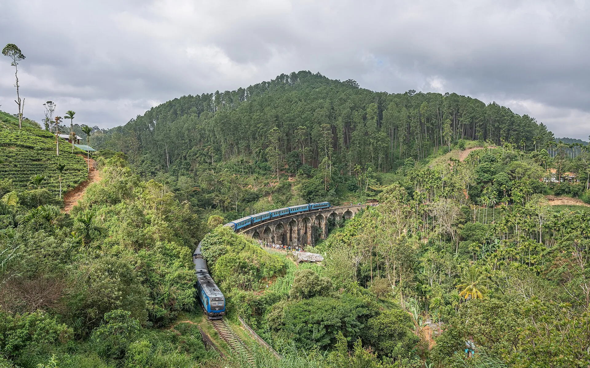
Maandag 11 januari
Met de trein
door de thee
Dit is het mooiste stuk van de beroemde treinreis: vier uur door theeplantages, langs watervallen en over bergruggen.
Foto: A.Savin
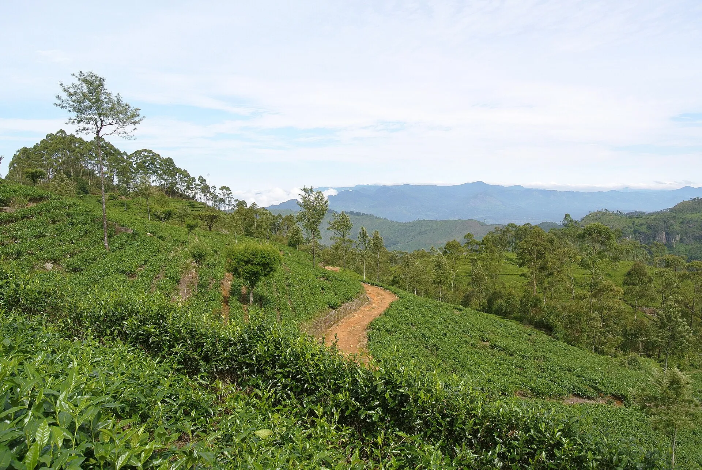
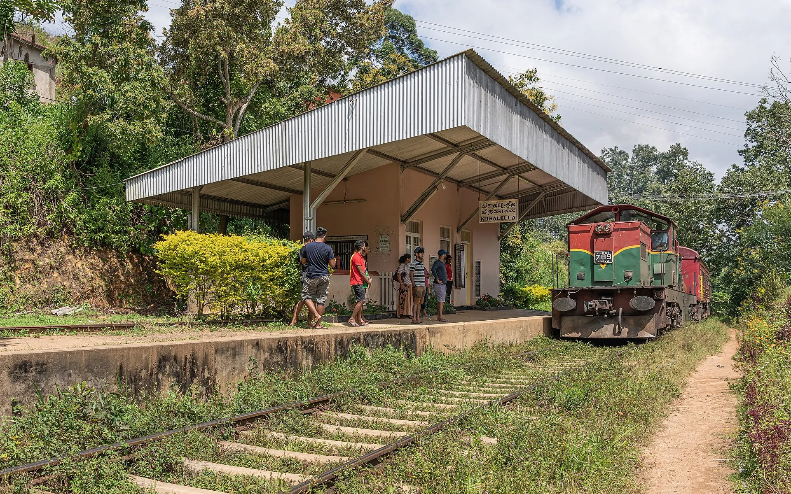
04Heuvelland
Ella
ma 11 – wo 13 januari2 nachten
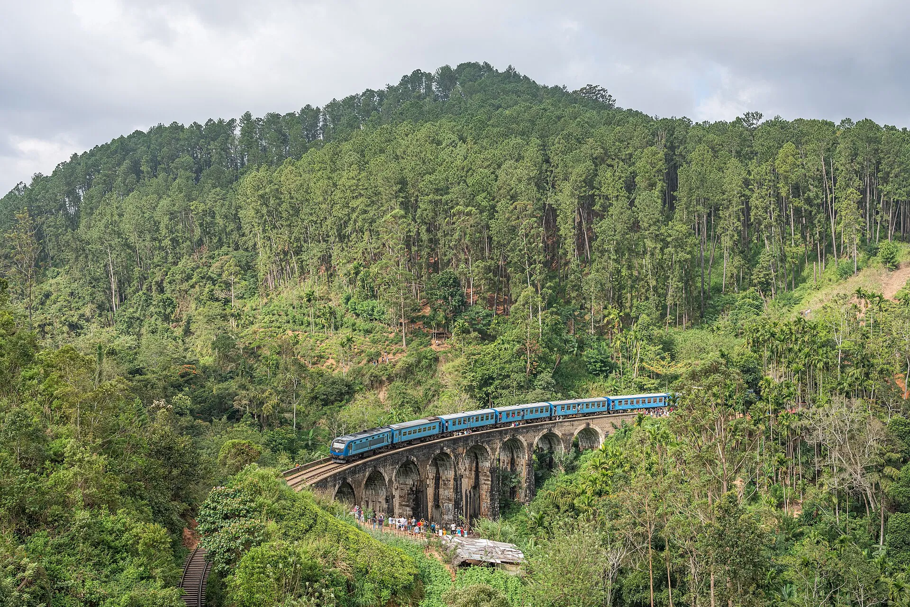
Ella is een relaxed bergdorp vol cafés, met uitzicht over de Ella Gap. Wandelen, thee drinken en kijken naar de trein.
Nine Arch Bridge
elk uur een treinDe beroemde stenen spoorbrug in de jungle. Vanaf Café Soul kijk je er met een drankje op uit.
Little Adam's Peak
zonsondergangEen makkelijke wandeling van een uur naar een top met uitzicht.
Halpewatte theefabriek
's ochtendsZien hoe de thee gemaakt wordt.
Matey Hut
's avondsRijst met curry's.
05Het wilde zuiden
Tissamaharama en Yala National Park
wo 13 – do 14 januari1 nacht
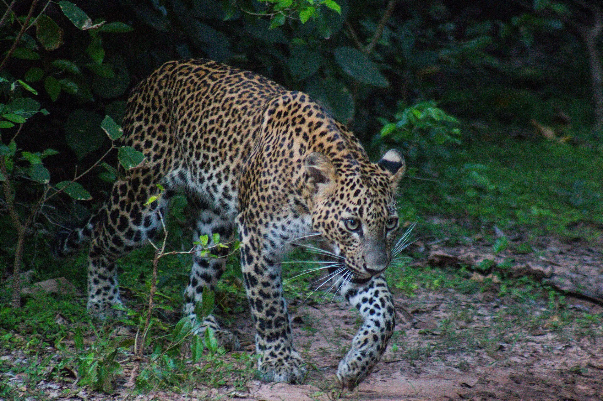
Yala is het bekendste park van Sri Lanka om luipaarden te zien. Er lopen ook olifanten, krokodillen, buffels en pauwen.
Tissa Lake
zonsondergangAan het meer, met honderden vleermuizen in de bomen.
Safari in Yala
Met de jeep het park in, als de dieren wakker worden.
Naar de kust
2 uurNa de safari rijden we zelf met de tuktuk naar zee.
06Zuidkust
Hiriketiya
do 14 – ma 18 januari4 nachten
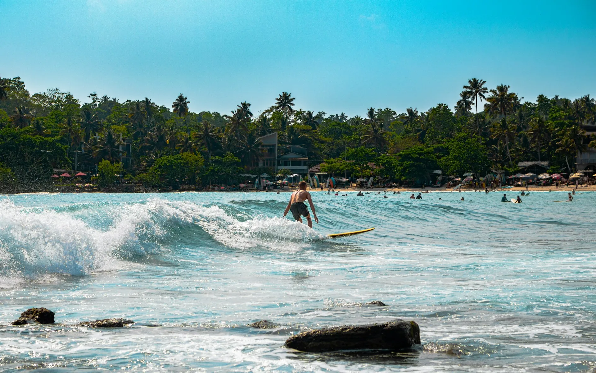
Hiriketiya is een kleine hoefijzervormige baai vol palmbomen, met golven voor beginners en gevorderden en een relaxte surfsfeer.
Surfen
elke ochtendZelf het water in, of een surfles op het strand.
Yoga
Bij Salt House, of om 07:30 uur bij Dots Bay House, met uitzicht op het regenwoud.
Blue Beach en de Hummanaya Blowhole
bij vloedWitte zandbanken, en een van de grootste blaasgaten ter wereld.
Dikwella beach
zonsondergangEn een avond eten bij Smoke & Bitters.
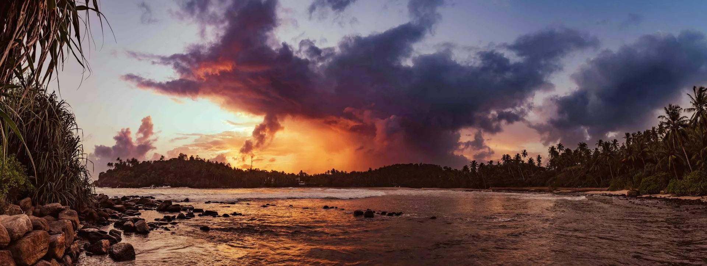
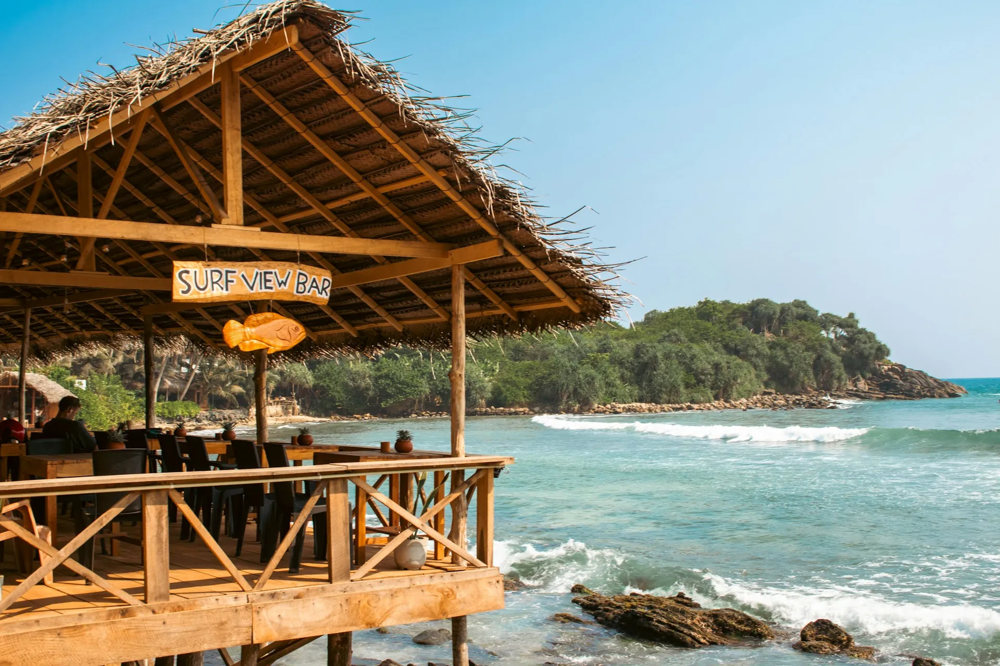
07Zuidkust
Ahangama
ma 18 – za 23 januari5 nachten
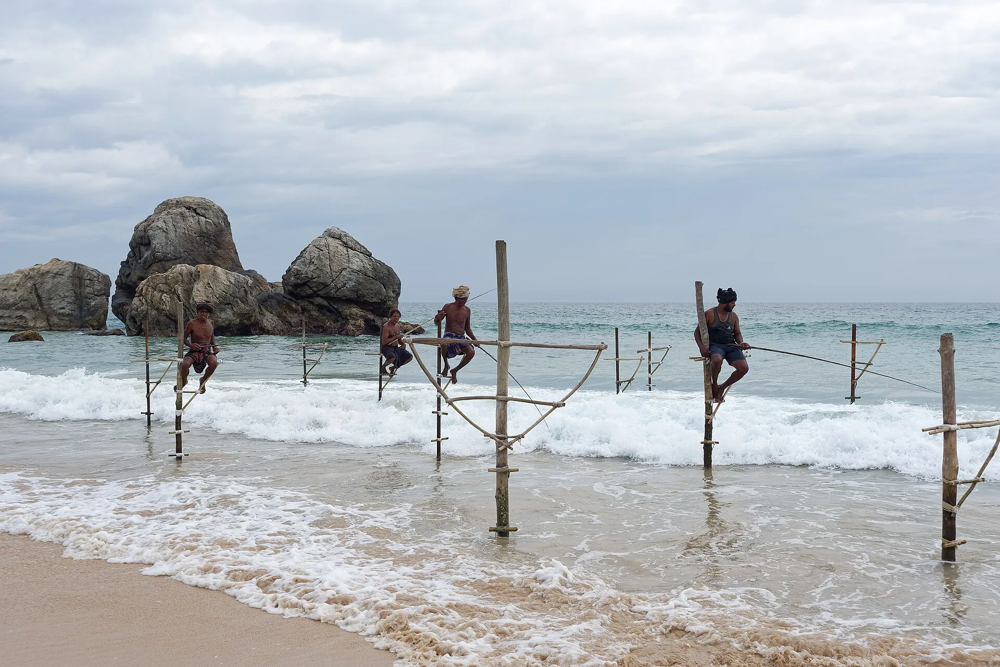
Ahangama is het hippe surfdorp van de zuidkust, met strandcafés, yogastudio's in de jungle en de traditionele steltvissers op palen in zee. Hier blijven we het langst.
Surfen
Bij Kabalana beach, of op de beginnersgolven van Weligama.
Pilates en yoga
Reformer-pilates bij Ulu House of Pilates. Yoga bij The Nuga House, bij Soul & Surf, of op een drijvend platform op de rivier bij Yin Yang.
Walvissen spotten
een ochtendMet de boot vanuit Mirissa. Januari is een van de beste maanden voor blauwe vinvissen, de grootste dieren op aarde.
Ontbijt en zonsondergang
Ontbijten bij Marshmallow Café of Cactus, de dag afsluiten bij Lighthouse.
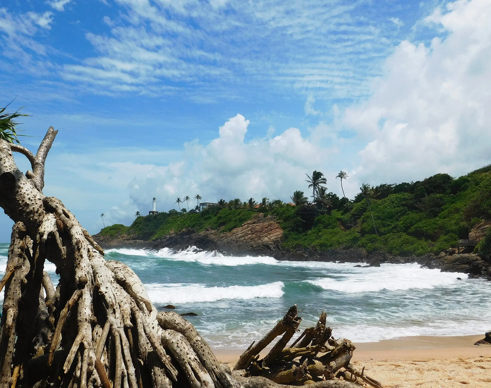
08Zuidkust
Galle Fort
za 23 – zo 24 januari1 nacht
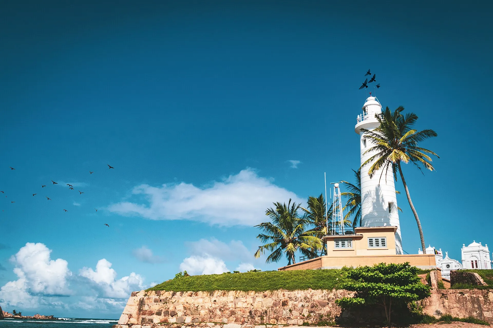
Galle Fort is een oude Nederlandse vesting aan zee, met witte huizen, kerkjes, boetiekjes en een vuurtoren binnen dikke stadsmuren. Onze laatste avond.
Rondlopen door het fort
Door Pedlar Street en Church Street, langs de vuurtoren en de Hollandse kerk.
Sieradenworkshop
Zelf een ring of hanger maken met Sri Lankaanse edelstenen.
Zonsondergang op de muren
Daarna een afscheidsdiner in het fort.
Naar het vliegveld
Zondagochtend in 2 uur naar het vliegveld, voor de vlucht van 10:15 uur.
Praktisch
Goed om te weten
Vluchten
Qatar Airways, met een overstap in Doha.
Wat het kost
| Vluchtenvoor ons samen | ± € 2.080 |
| Hotels8 hotels, 19 nachten | € 854 |
| Samen | ± € 2.934 |
| Per persoon | ± € 1.470 |
Prijzen van 17 november 2026. Niet meegerekend: vervoer op het eiland, de safari, de walvissentocht, eten en entreegeld.
Zo reizen we
- ChauffeurDoor het binnenland: van het vliegveld naar Sigiriya, Kandy en Adam's Peak, en van Ella naar Tissa.
- TreinVan Hatton naar Ella, vier uur door het heuvelland.
- Eigen tuktukVanaf Tissa rijden we zelf, langs de hele zuidkust tot Galle.
Waar we slapen
- 01SigiriyaSigiri Enaya Cottage3 nachten€ 112
- 02KandyAnna Asia Villa2 nachten€ 106
- 03Adam's PeakHugging Clouds1 nacht€ 26
- 04EllaElla Wood Cabin2 nachten€ 114
- 05TissamaharamaAriya Tissa1 nacht€ 43
- 06HiriketiyaBreath House4 nachten€ 200
- 07AhangamaBalazo5 nachten€ 118
- 08Galle FortNo 05 Middle Street1 nacht€ 135
De vluchten en hotels zijn uitgezocht maar nog niet geboekt. Alle acht hotels zijn gratis te annuleren en betaal je pas ter plaatse.